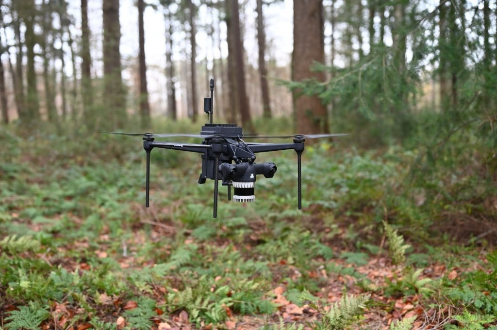
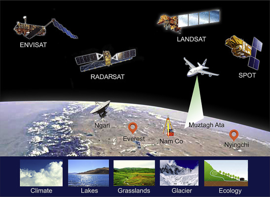
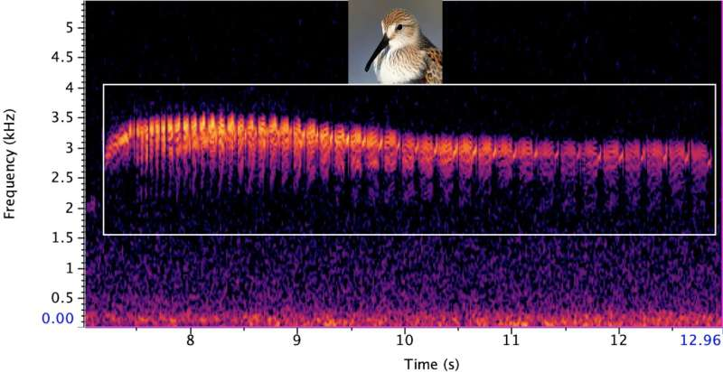

Algunas tecnologías utilizadas en conservación y acción climática y ejemplos de aplicación.
1. Sistemas de Información Geográfica (SIG) y Observación Geoespacial
Los Sistemas de Información Geográfica (SIG) son herramientas que permiten la recopilación, análisis y visualización de datos geoespaciales. Estos sistemas ayudan a mapear la distribución de especies, identificar áreas críticas para la biodiversidad y planificar estrategias de conservación. Por ejemplo, los SIG se utilizan para delimitar áreas protegidas, identificar corredores ecológicos y evaluar la conectividad entre hábitats.Los SIG permiten analizar tendencias de mejoramiento o pérdida de hábitats. Algunos ejemplos de su aplicación incluyen la delimitación de áreas protegidas y la identificación de corredores ecológicos. En este artículo se describen otros ejemplos.
2. Drones para el Monitoreo Aéreo
Los drones se utilizan con éxito en parques nacionales y reservas para monitorear la biodiversidad, detectar cambios en el uso del suelo y evaluar la salud de los ecosistemas. Por ejemplo, en Colombia, los drones han ayudado a rastrear poblaciones de jaguares y evaluar la deforestación. Los drones han revolucionado el monitoreo aéreo en áreas silvestres protegidas y la conservación de la biodiversidad. A continuación, describiré cómo se utilizan estos dispositivos para preservar nuestros ecosistemas:
a - Vigilancia de la Fauna Salvaje:
Los drones permiten la vigilancia no intrusiva de la vida silvestre. Se utilizan para monitorear poblaciones de animales, detectar cambios en su comportamiento y evaluar la salud de las especies. Por ejemplo, en parques nacionales y reservas, los drones pueden rastrear la presencia de tigres, elefantes, rinocerontes y otros animales amenazados. Las imágenes capturadas ayudan a los científicos a comprender sus movimientos y hábitats.b - Mapeo y Monitoreo de Hábitats:
Los drones generan mapas detallados de áreas inaccesibles o extensas. Esto es especialmente útil para evaluar la calidad del hábitat y detectar cambios en la vegetación. Los datos recopilados permiten identificar áreas críticas para la biodiversidad, como zonas de anidación de aves o corredores ecológicos.c- Detección de Amenazas y Cambios Ambientales:
Los drones pueden identificar incendios forestales, deforestación, invasiones de especies exóticas y erosión del suelo. En áreas protegidas, los drones alertan a los guardaparques sobre actividades ilegales, como la caza furtiva o la tala ilegal.d - Monitoreo de Calidad del Agua y Ecosistemas Acuáticos:
Los drones pueden inspeccionar cuerpos de agua, como ríos, lagos y arrecifes de coral. Capturan imágenes de la calidad del agua, la salud de los ecosistemas acuáticos y la presencia de contaminantes. Por ejemplo, en la Gran Barrera de Coral, los drones ayudan a evaluar el blanqueamiento coralino y la salud de los arrecifes.e - Investigación Científica y Educación:
Los drones son herramientas valiosas para la investigación científica. Permiten estudiar la biodiversidad, mapear la topografía y evaluar la dinámica de los ecosistemas. Además, se utilizan en programas educativos para enseñar a las comunidades locales sobre la importancia de la conservación y la biodiversidad. Es importante destacar que el uso de drones debe ser responsable. Las organizaciones ambientales y de conservación deben seguir directrices éticas y minimizar los impactos en las comunidades locales y la vida silvestre. Además, en áreas protegidas, existen restricciones específicas para el uso de drones con fines recreativos o turísticos.3. Satélites y Sensores Remotos
La observación satelital proporciona datos sobre la cobertura terrestre, la deforestación y la dinámica de los ecosistemas. Los sensores remotos monitorean la salud de los bosques, la calidad del agua y la biodiversidad marina. Organizaciones como Global Forest Watch utilizan estos datos para alertar sobre la deforestación en tiempo real.
a- Monitoreo de la salud de los bosques:
Los satélites y sensores remotos juegan un papel crucial en el monitoreo de la salud de los bosques. Estos dispositivos espaciales pueden monitorear y analizar una amplia gama de variables ambientales, como la deforestación1. Los sensores remotos son capaces de recoger datos a distancia, sin estar físicamente presentes2. Por ejemplo, los sensores pueden capturar imágenes en diferentes bandas espectrales, lo que permite analizar diferentes características de la Tierra, como la vegetación3. Un ejemplo de aplicación de esta tecnología es el Sistema de Monitoreo de los Manglares de México (SMMM), que utiliza datos de teledetección para monitorear la salud de los manglares.
b- Monitoreo de la calidad del agua:
Los satélites también juegan un papel importante en la vigilancia de la calidad del agua1. Pueden detectar la concentración de gases y partículas en la atmósfera, lo que nos ayuda a identificar las áreas con altos niveles de contaminación y tomar medidas para reducirlos1. Un ejemplo de cómo se utilizan los satélites para monitorear la calidad del agua es el de infraestructuras críticas como presas y acueductos, acuíferos, fugas de agua.
c- Monitoreo de la biodiversidad del medio marino:
La teledetección es especialmente útil para el monitoreo de la biodiversidad marina. Los sensores remotos pueden recolectar datos sobre la superficie terrestre y la atmósfera, lo que incluye los océanos. En particular, las mareas rojas son brotaciones de algas nocivas que afectan la biodiversidad marina y pueden ser perjudiciales para la salud humana. La teledetección permite detectar y monitorear estas proliferaciones de algas desde el espacio. Los sensores remotos pueden identificar áreas con altas concentraciones de clorofila (indicativo de fitoplancton) y alertar sobre posibles mareas rojas.
4. Inteligencia Artificial (IA) para el Análisis de Datos
La Inteligencia Artificial (IA) se ha convertido en una herramienta poderosa para la conservación de la biodiversidad. Puede procesar grandes cantidades de datos para identificar patrones y predecir cambios en la biodiversidad y el clima. A continuación, exploraremos cómo se aplica la IA en el monitoreo y preservación de los ecosistemas.
a- Vigilancia de la Fauna Salvaje:
Los algoritmos de IA se utilizan para analizar imágenes capturadas por cámaras trampa. Estas cámaras registran la presencia de animales en áreas remotas. La IA puede identificar y rastrear especies específicas, como tigres, osos o jaguares, a partir de estas imágenes. Además, la IA ayuda a detectar comportamientos anómalos o amenazas, como la presencia de cazadores furtivos o la invasión de áreas protegidas.
b- Análisis de Datos Ambientales:
La IA procesa grandes cantidades de datos ambientales, como imágenes satelitales, registros climáticos y datos de sensores. Esto permite identificar patrones y tendencias. Por ejemplo, se utiliza para predecir la deforestación, la pérdida de hábitats o el cambio climático. Los científicos pueden tomar medidas preventivas basadas en estas predicciones.
c- Identificación de Especies y Sonidos:
La IA se aplica en la identificación de especies a partir de imágenes y grabaciones de sonidos. En proyectos como iNaturalist, la IA ayuda a clasificar plantas, aves, insectos y otros organismos. También se utiliza para analizar grabaciones acústicas y monitorear poblaciones de aves y mamíferos marinos.
d- Optimización de Recursos y Planificación de Conservación:
La IA ayuda a optimizar la asignación de recursos en proyectos de conservación. Por ejemplo, al determinar las áreas prioritarias para la protección o la restauración. Además, se utiliza en la planificación de corredores ecológicos y la conectividad entre hábitats.
e- Predicción de Cambios Climáticos y Amenazas:
La IA analiza datos climáticos y modelos de cambio climático para predecir impactos futuros en la biodiversidad. También ayuda a evaluar amenazas, como la propagación de enfermedades o la invasión de especies exóticas.
5. Blockchain para la Transparencia y la Rendición de Cuentas
Blockchain mejora la trazabilidad de las emisiones de gases de efecto invernadero y permite la autenticación instantánea de datos. En proyectos de conservación, se utiliza para rastrear la cadena de suministro de productos sostenibles, como madera certificada o productos pesqueros. Por ejemplo, la plataforma OpenSC utiliza blockchain para rastrear la pesca sostenible de atún, proporcionando información confiable a los consumidores.
6. Herramienta de Presentación de Datos (DaRT)
La Herramienta de Presentación de Datos (DaRT) permite a los países recopilar y reportar datos sobre la biodiversidad y las emisiones de gases de efecto invernadero. Facilita la comprensión de los vínculos entre la biodiversidad global, el desarrollo sostenible y la salud. DaRT se utiliza en múltiples países para monitorear el progreso hacia las metas de conservación y mitigación3. Por ejemplo, en Colombia, DaRT ha sido implementada para evaluar la efectividad de las áreas protegidas y la restauración ecológica.